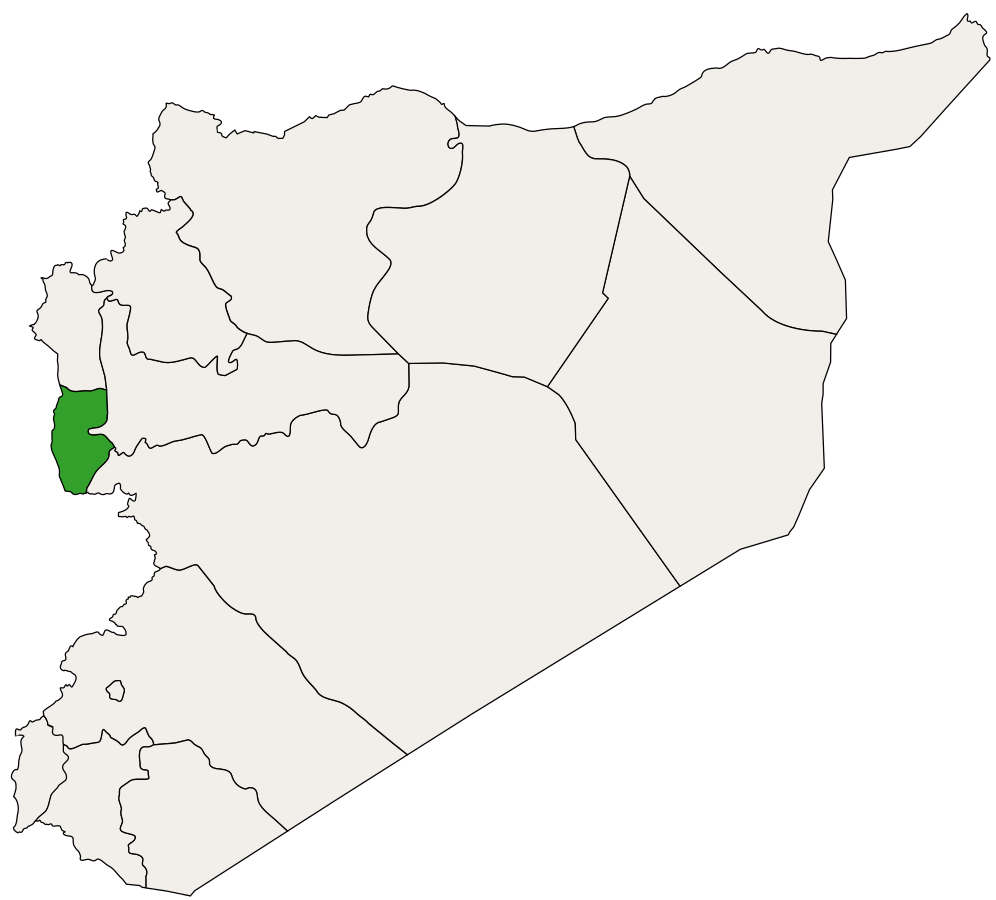

طَرطُوس، هي مدينة ساحلية رئيسية على ساحل البحر الأبيض المتوسط في سوريا. وهي ثاني أكبر مدينة ساحلية في سوريا (بعد اللاذقية)، وأكبر مدينة في محافظة طرطوس. وتقع على خط طول 35.89 درجة وخط عرض 34.89 درجة وترتفع حوالي 20 متر عن سطح البحر.
كانت طرطوس حتى سبعينيات القرن العشرين ضمن محافظة اللاذقية، ثم أصبحت محافظة منفصلة. يبلغ عدد السكان 458.327 نسمة (تقديرات عام 2023). تشتهر في الصيف بكونها مكانًا لقضاء العطلات للعديد من السوريين وتضم العديد من المجمعات والمنتجعات السياحية في المنطقة. يحتوي الميناء على قاعدة بحرية روسية صغيرة.